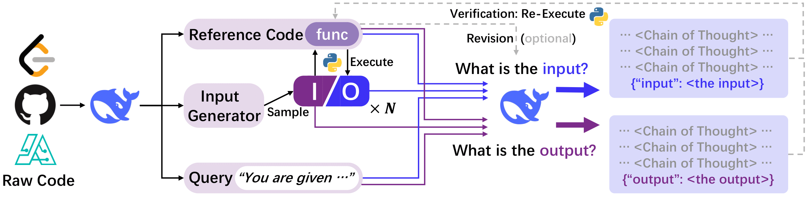

1. 계속되는 DeepSeek의 오픈소스 전략
- DeepSeek가 LLM ’추론 성능 향상법’을 오픈 소스로 공개했습니다.
-
DeepSeek가 LLM의 추론 성능을 향상하기 위한 새로운 사후 훈련 방식인 ’코드 I/O’를 개발했습니다.
코드I/O는 모델의 추론 과정이 실제로는 코드를 통해 진행된다는 데 착안해서, 코드를 자연어 형식으로 변환, LLM이 논리적 흐름을 자연스럽게 인지하여 추론 능력을 강화하는 방법입니다. 이번 논문은 지난 1월 22일 ’DeepSeek-R1’이 출시된 지 3주 만에 나온 자료인데, 이번 논문 자료도 깃허브를 통해 오픈 소스로 공개했습니다. -
먼저 다양한 소스를 통해 원시 코드를 수집한 뒤, 이를 바탕으로 I/O (Input / Output) 쌍을 샘플링합니다. LLM은 주어진 Input을 바탕으로 Output을 예측하고, 반대로 주어진 Output을 바탕으로 Input을 예측합니다. LLM은 CoT 기법을 사용해 추론 단계를 설명합니다. 이렇게 하면 LLM이 코드 문법을 중심으로 단순히 계산을 하는 것이 아니라 논리를 가지고 추론을 진행할 수 있게 됩니다.

- DeepSeek의 ’오픈소스 주간’이 시작됩니다.
-
DeepSeek가 24일부터 시작될 ’오픈소스 주간’의 일환으로 DeepSeek의 서비스 코드 일부를 오픈소스로 공개할 계획을 밝혔습니다. DeepSeek는 지난 2월 21일, X에 올린 게시물에서 실제 환경에서 검증된 5개의 코드 저장소를 오픈소스로 공개할 것이라고 밝혔습니다.
2. AI 안전, 어디로 가는 걸까?
- 영국의 AI안전연구소가 AI보안연구소로 이름을 바꿨습니다.
-
영국이 자국의 AI 안전연구소(AI Safety Institute)를 AI 보안연구소(AI Security Institute)로 변경한다고 발표했습니다. 기존 AISI(안전연구소)에서는 대규모 언어 모델의 실존적 위험과 편향성 연구에 중점을 두었는데요, 앞으로는 사이버보안과 국가 안보에 대한 AI 위험 보호에 초점을 맞출 예정입니다. 영국 정부는 이번 발표에서 앞으로 AI를 통해 경제와 산업 발전에 중점을 둘 것이라고 선언했습니다. 지난 1월에 발표된 ‘Plan for Change’와 비교해 보면 ’안전’, ‘위험’ 등의 단어가 제외되었습니다. 이러한 변화는 AI 정책이 AI 안전을 위한 규제보다는 경제 발전과 기술 혁신에 더 중점을 두는 방향으로 변화하고 있음을 보여줍니다.
- 미국 AI안전연구소는 대규모 인력 감축 가능성이 높아지고 있습니다.
-
미국은 AI안전연구소가 아예 해체될 수도 있다는 우려가 나오고 있습니다. AXIOS는 NIST소속의 AISI와 Chips for America가 수습 직원들을 대상으로 해고가 진행될 예정이라고 전했습니다. Bloomberg는 일부 직원은 이미 구두로 해고 통지를 받았다고 보도했습니다.
-
트럼프 2기 행정부가 들어서면서 미국 AISI의 미래는 불확실해 보였습니다. 미국 AISI는 조 바이든 대통령의 AI 안전에 관한 행정명령의 일환으로 설립되었고, AI 개발과 관련된 위험을 연구해 왔습니다. 하지만 트럼프는 취임 첫날 이 행정 명령을 폐지한 바 있습니다. 참고로 AISI 소장은 지난 2월 초에 사임했습니다.
3. 빅테크의 트럼프 눈치보기

- OpenAI가 웹사이트에서 다양성 공약 페이지를 제거했습니다.
-
OpenAI가 자사 웹사이트에서 DEI 공약 페이지를 삭제했습니다. 기존의 페이지는 새로운 ‘동적 팀 구축’ 페이지로 리다이렉트 되고 있습니다. 새로운 페이지에선 ’다양성’이라는 표현 대신 ’다른 배경’이라는 표현을 사용합니다. 과거 페이지에선 DEI에 대한 투자를 강조했지만, 이제는 관련 표현을 찾기 어려워졌습니다. 이러한 변경은 지난 1월 22일에서 27일 사이에서 이루어진 것으로 추정되는데, 최근 미 법무부가 연방 자금을 받는 민간 기업의 DEI 프로그램을 조사하는 상황과 맞물립니다.
-
OpenAI 뿐 아니라 Meta, Google, Amazon 등 다른 IT 기업들도 최근 DEI 정책을 조정하거나 축소하고 있습니다. Meta, Google, Amazon 모두 지난 1월 DEI 정책을 제거하거나 조정했다고 발표했죠. Google과 Amazon은 최근 10-K 보고서(연례 보고서)에서 다양성과 포용성에 대한 언급을 아예 삭제하였습니다.
- 미 FTC가 ‘이용자 검열’ 문제와 관련해 조사에 나설 채비를 하고 있습니다.
-
우리나라 공정거래위원회 격인 미국의 FTC(연방거래위원회)가 기술 플랫폼 기업들의 ’이용자 검열’과 관련된 공개 조사를 실시하겠다고 발표했습니다. 블룸버그에 따르면 FTC는 5월 21일까지 이용자 의견 수렴에 들어갔고, 향후 공식 조사로 이어질 수 있다고 합니다.
-
공화당 측은 그동안 SNS 업체들이 보수적 관점의 게시물을 제한하거나 삭제해 왔다고 주장하고 있습니다. 트럼프 대통령은 과거 의사당 폭동 사태 이후 폭도들을 독려하는 글 등을 남겨 트위터, 유튜브, 페이스북 등에서 계정이 차단된 경험이 있죠. 플랫폼 기업들의 이러한 조치가 이용자들을 검열하는 것이라는 건데요. 이번 FTC의 조사가 플랫폼 기업의 콘텐츠 관리와 표현의 자유 사이의 균형에 대한 논쟁을 더욱 격화시킬 가능성도 커 보입니다.
- OpenAI는 AI 모델이 논쟁적인 주제를 다루는 방식을 재고하고 있습니다.
-
OpenAI가 AI 모델의 행동 지침을 정의하는 Model Spec을 대폭 확장하여 공개했습니다. 특히 논쟁적인 주제에 대한 접근 방식에 변화를 주었습니다. 변화된 ChatGPT는 앞으로 더 많은 질문에 답변하고, 다양한 관점을 제공하며, 토론을 꺼리는 주제를 줄일 예정입니다. 전문가들은 OpenAI의 수정된 행동 지침이 미 보수층의 AI 검열 비판에 대한 대응으로 해석하기도 하지만, OpenAI는 이를 부인하고 있습니다. OpenAI뿐 아니라 Meta의 주커버그, X의 머스크도 최근 혐오 발언에 대한 제한을 완화하고 콘텐츠 검열 축소 방향에 대한 지지를 표명했습니다.
4. 미스트랄이 아랍어 모델을 발표

- 미스트랄이 아랍어권 모델인 Mistral Saba를 출시했습니다.
-
아랍어권 국가를 위해 특별 설계된 Mistral Saba는 240억 개의 파라미터를 가진 모델입니다. 일반 목적의 Mistral Small 3와 비슷한 크기지만 아랍어 처리 성능이 더 우수합니다. 미스트랄에 따르면 중동과 남아시아의 문화적 교류로 인해 타밀어, 말라얄람어 등 남인도 언어도 잘 처리합니다.
- 프랑스 AI 기업인 미스트랄이 왜 아랍어권 모델을 만든 걸까요?
-
현재 미스트랄의 비즈니스 전략은 미국 기반 투자자들로부터 대규모 투자를 유치하는 것으로부터 시작됩니다. 하지만 이번 Mistral Saba를 기점으로 향후 중동 투자자의 영입 가능성이 높아진 거죠. 중동 시장과의 접점을 넓히면서, 프랑스 AI 기업인 미스트랄이 중동권 국가들에게 미국과 중국 AI 기업들의 대안으로 자리매김하려는 전략으로도 해석할 수 있습니다. 또한 Saba 모델을 통해 중동 시장 내 온프레미스(on-premise)를 지원함으로써 에너지, 금융, 의료 등 민감한 산업 분야도 진출해 나갈 수 있습니다.
5. 대한민국 AI 국가대표팀 탄생?
- 정부가 AI 국가대표 정예팀을 선발하겠다고 발표했습니다.
-
2월 20일 국가인공지능위원회는 최상목 대통령 권한대행 부총리 겸 기획재정부 장관 주재로 3차 회의를 열고 ‘AI컴퓨팅 인프라 확충을 통한 국가 AI 역량 강화 방안’을 발표했습니다. 이 날 발표한 정부의 AI 역량 강화 방안의 핵심은 크게 세 가지입니다. 첫째는 세계 수준의 국내 AI 모델 개발, 둘째는 AI 컴퓨팅 인프라 확충, 셋째는 AI 학습을 위한 공공데이터 개방이죠.
-
먼저 한국형 챗GPT를 목표로 ‘월드 베스트 LLM’ 프로젝트를 추진하기로 했는데요. 이 프로젝트를 위해 국가대표 AI 정예팀을 선발할 예정이고, 정예팀으로 선정된 기업에게는 데이터와 GPU 등 핵심 인프라를 전폭적으로 지원할 예정입니다. 또한 AI 컴퓨팅 인프라 확충도 속도를 내 내년 상반기까지 1만 8,000장 규모의 GPU 확보를 목표로 달려 나갈 계획입니다. 또한 정부는 AI 학습을 위한 공공, 민간 데이터도 대폭 개방할 예정입니다.
-
최근 AI 모델 개발 경쟁은 기업 단위를 넘어 국가 대항전 차원으로 확대되었습니다. 미국은 OpenAI, 소프트뱅크, 오라클 등이 참여하는 5,000억 규모의 ’스타게이트 프로젝트’를 발표하였고, 프랑스는 최근 파리 AI 정상회의에서 1,090억 유로의 민간투자를 약속한 바 있습니다. 아직 국내 AI 투자는 이에 미치지 못하는 상황입니다.